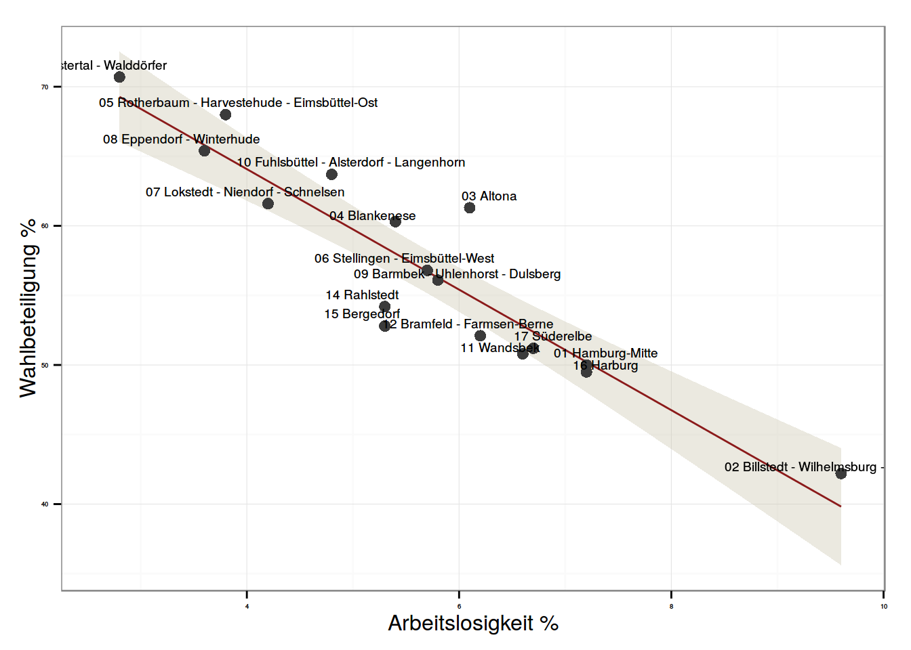
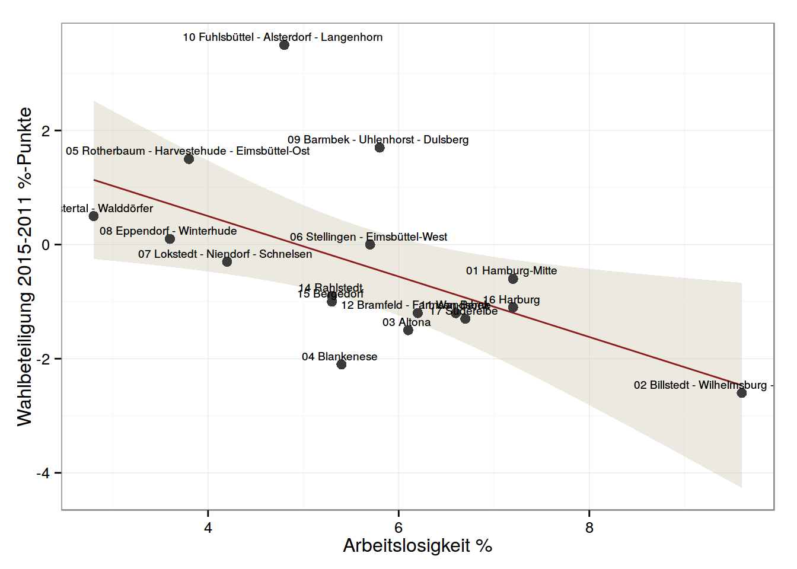
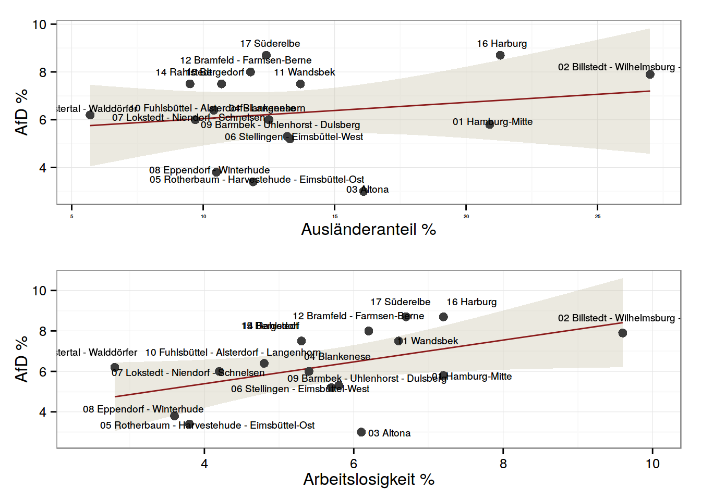
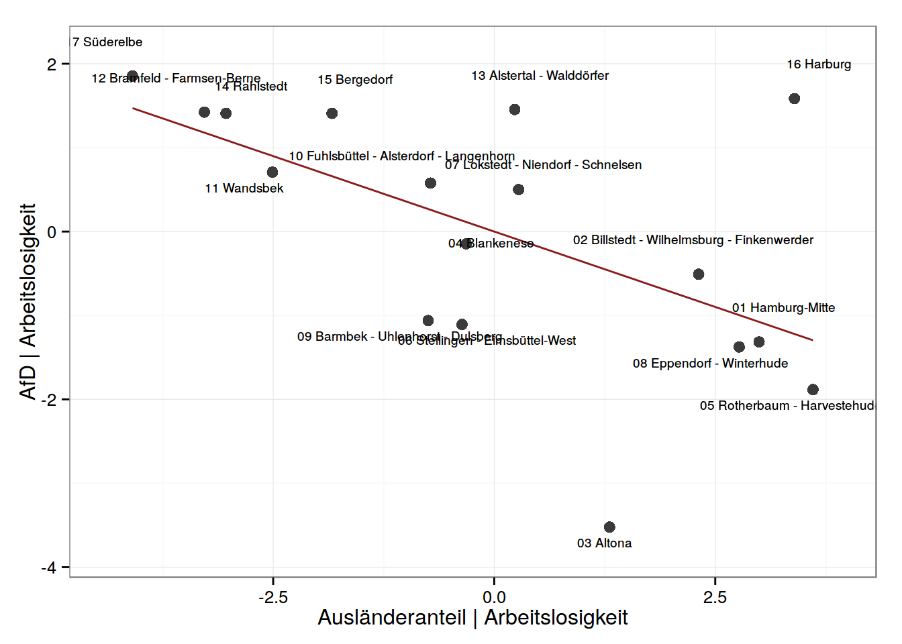

Die Wahl zur Hamburger Bürgerschaft 2015 verzeichnete ein neues Rekordtief der Wahlbeteiligung. Zugleich gelang der AfD erstmals der Einzug in ein westdeutsches Landesparlament. Eine Kurzanalyse der Wahlkreisdaten zeigt: Die Wahlbeteiligung war besonders dort niedrig wo die Arbeitslosigkeit hoch war, in diesen Wahlkreisen fand auch der deutlichste Rückgang der Wahlbeteiligung gegenüber 2011 statt. Die AfD scheint, ähnlich PEGIDA, besonders dort erfolgreich zu sein, wo wenige AusländerInnen leben.
Viel Beachtung erhielt neben den Ergebnissen der Hamburger Bürgerschaftswahl am vergangenen Sonntag wieder die Wahlbeteiligung, die für Landtagswahlen typisch niedrig ausfiel: 56,9%. Dies ist ein minimaler Rückgang gegenüber der letzten Bügerschaftswahl in 2011 - damals betrug die Wahlbeteiligung 57,3%. Dabei ist Wahlbeteiligung sehr ungleich über die Stadtgebiete verteilt - von 70.7% im Wahlkreis 13 Alstertal - Walddörfer zu 42.2% im Wahlkreis 02 Billstedt - Wilhelmsburg - Finkenwerder
(Standardabweichung: 5.8%-Punkte).
Dabei zeigt sich erneut, dass die Wahlbeteiligung stark an die sozio-ökonomischen Gegebenheiten eines Wahlkreises gebunden ist. In sozial schwächeren Stadtgebieten fiel die Wahlbeteiligung erneut niedriger aus. Je höher die Arbeitslosigkeit (in % der 15- bis 65-Jährigen) in einem Wahlbezirk war, desto niedriger fiel die Wahlbeteiligung aus. Die Arbeitslosenrate korreliert extrem stark mit der Wahlbeteiligung (Abb. 1). So lässt sich mit einem einfachen bivariaten Regressionsmodel (Tab. 1) ganze 85% der Varianz in der Wahlbeteiligung erklären. Ein substantiell ählicher Zusammenhang ergibt sich, wenn alternativ der Anteil der LeistungempfängerImmen nach SGBII an der Gesamtbevölkerung in Betracht gezogen wird. Entsprechend besteht ebenso ein starker bivariater Zusammenhang zwischen dem Durchschnittlichen Einkommen je Steuerpflichtigen in einem Wahlkreis und der dortigen Wahlbeteiligung.

Auch der Rückgang der Wahlbeteiligung ist ungleich über die Stadt verteilt. In einigen Stadtgebieten stieg die Wahlbeteiligung sogar während sie in anderen Gebieten sank. Am stärksten stieg sie im Wahlkreis 10 Fuhlsbüttel - Alsterdorf - Langenhorn ( 3.5%-Punkte). Schlusslicht war erneut der Wahlkreis 02 Billstedt - Wilhelmsburg - Finkenwerder ( -2.6%-Punkte) Rückgang der Wahlbeteiligung zeigt sich ein ähnliches Muster. Dieser war besonders in sozial schwächeren Stadtvierteln gegenüber 2011 nochmals niedriger (Abb. 2). Der Zusammenhang ist zwar schwächer, jedoch auch statistisch und substantiell signifikant (Tab. 1).

Neben der Wahlbeteiligung lag ein besonderes Augenmerk bei dieser Wahl auf der neuen Partei Alternative für Deutschland (AfD). Die AfD in Hamburg wurde für einen rechtspopulistischen Wahlkampf kritisiert. So warnte etwa der AfD-Spitzenkandidat Kruse vor einem “Vordringen islamischer Eigenarten” (SZ, 12.01.2015). Die AfD schien in Hamburg, wie die OrganisatorInnen der PEGIA-Bewegung, auf die Angst einiger BürgerInnen vor dem Fremden zu setzen. Deren montägliche Demonstrationen schienen besonders in Orten, in denen wenige Menschen mit Migrationshintergrund leben, stark zu sein. In der Tat scheinen Hamburger AfD-WählerInnen ähnliche Sorgen umzutreiben wie PEGIDA-TeilnehmerInnen. So gaben in einer Umfrage des Instituts infratest dimap für die ARD die Pluralität der AfD-WählerInnen (33%) an, das Thema “Ausländer / Zunwanderung” sei für sie ein wichtiges Thema gewesen. 59% der AfD-WählerInnen (gegenüber 23% im Rest der WählerInnenschaft) stimmten der Aussage zu “Hamburg hat zu viele Flüchtlinge” (ARD, o.D.). Es liegt also der Schluss nahe, dass die AfD, analog zur PEGIDA-Bewegung, daher besonders in Stadtteilen mit geringer migrantischer Bevölkerung erfolgreich war.

Ein solcher Zusammenhang ist, zumindest auf Basis der Wahlkreisdaten, nicht offensichtlich. Es besteht kein bivariater Zusammenhang zwischen dem Anteil der in einem Wahlkreis lebenden Bürger ohne deutsche Staatsbürgerschaft und dem Stimmanteil der AfD (Abb. 3, Tab. 1). In der Tat ergibt sich sogar ein schwacher statistisch nicht signifikanter positiver Zusammenhang.
Jedoch ist Hamburg eine Stadt mit vielen BürgerInnen mit Migrationshintergrund mit oder ohne deutsche Staatsbürgerschaft. Dabei leben diese vornehmlich in sozial schwächeren Wohngebieten (r = 0.88 für Arbeitslosenrate und AusländerInnenanteil). Arbeitslosigkeit korreliert positiv, und statistisch signifikant, mit dem Stimmanteil der AfD (Abb. 3, Tab. 1) - ein Hinweis auf das Protestwählerpotential der AfD.
Kontrolliert man für die Arbeitslosigkeit in einem Wahlkreis ergibt sich weiterhin ein positiver Zusammenhang zwischen der Arbeitslosenrate und dem Stimmanteil der AfD. Weitaus interessanter jedoch: es stellt sich ebenso eine signifikant negative partielle Korrelation zwischen dem Ausländeranteil und dem Stimmanteil der AfD ein (Abb. 4, Tab. 1).

Kontrolliert man also für die Arbeitslosenrate ergibt sich ein negativer Zusammenhang zwischen dem Ausländeranteil in einem Wahlkreis und dem dort erzielten Ergebnis der AfD. Dies würde die These bestätigen, dass der Erfolg der AfD, ähnlich dem der PEGIDA, besonders dort groß ist wo wenige BürgerInnen ohne deutsche Staatsbürgerschaft leben.
Dieses Ergebnis ist jedoch mit Vorsicht zu genießen. Verwendet man statt des Ausländeranteils den Anteil der BürgerInnen mit Migrationshintergrund so ergibt sich weder für diese Variable noch für die Arbeitslosenrate ein Zusammenhang zum Wahlergebnis der AfD. Die hier dargestellten ersten Ergebnisse bedürfen der Substantiierung durch weitere Analysen. Eine Erforschung der Erfolgsbedingungen der AfD im Besonderen und rechtspoulistischer Parteien im Allgemeinen ist ein politikwissenschaftlich wie gesellschaftlich wichtiges Forschungsfeld.
Arndt Leininger ist Doktorand an der Hertie School of Governance. Seine Forschungsschwerpunkte sind Direkte Demokratie, Vergleichende Politikwissenschaft, Repräsentation und Wahlforschung. Arndt hat einen MSc in Political Science and Political Economy der London School of Economics and Political Science und einen Bachelorabschluss in Politikwissenschaft der Freien Universität Berlin. Zwischen 2012 und 2013 hat er als Wissenschaftlicher Mitarbeiter von Sven-Christian Kindler, MdB gearbeitet.
Alle dieser Analyse zu Grunde liegenden Materialien sind verfügbar auf: https://github.com/aleininger/hhwahl2015
| Dependent variable: | |||||
| to | to - to11 | afd | |||
| Wahlbeteiligung | Veränd. Wahlb. | AfD | AfD | AfD | |
| (1) | (2) | (3) | (4) | (5) | |
| (Konstante) | 0.068 | -0.359** | |||
| (0.086) | (0.136) | ||||
| Arbeitslosigkeit | 81.402*** | 2.618** | 5.368*** | 3.236** | 2.357* |
| (2.741) | (1.171) | (1.242) | (1.434) | (1.258) | |
| Ausländeranteil | -4.332*** | -0.530** | 0.539** | 1.555*** | |
| (0.466) | (0.199) | (0.244) | (0.437) | ||
| Observations | 17 | 17 | 17 | 17 | 17 |
| R2 | 0.852 | 0.320 | 0.040 | 0.245 | 0.496 |
| Adjusted R2 | 0.842 | 0.275 | -0.024 | 0.195 | 0.424 |
| Residual Std. Error | 3.016 (df = 15) | 1.288 (df = 15) | 1.780 (df = 15) | 1.578 (df = 15) | 1.335 (df = 14) |
| F Statistic | 86.252*** (df = 1; 15) | 7.069** (df = 1; 15) | 0.625 (df = 1; 15) | 4.875** (df = 1; 15) | 6.888*** (df = 2; 14) |
| Note: | p<0.1; p<0.05; p<0.01 | ||||
| Wahlbezirk | Wahlbeteiligung | Wahlb. 2011 | AfD | Arbeitslosigkeit | Ausländeranteil |
|---|---|---|---|---|---|
| 01 Hamburg-Mitte | 50.00 | 50.60 | 5.80 | 7.20 | 20.90 |
| 02 Billstedt - Wilhelmsburg - Finkenwerder | 42.20 | 44.80 | 7.90 | 9.60 | 27.00 |
| 03 Altona | 61.30 | 62.80 | 3.00 | 6.10 | 16.10 |
| 04 Blankenese | 60.30 | 62.40 | 6.00 | 5.40 | 12.50 |
| 05 Rotherbaum - Harvestehude - Eimsbüttel-Ost | 68.00 | 66.50 | 3.40 | 3.80 | 11.90 |
| 06 Stellingen - Eimsbüttel-West | 56.80 | 56.80 | 5.20 | 5.70 | 13.30 |
| 07 Lokstedt - Niendorf - Schnelsen | 61.60 | 61.90 | 6.00 | 4.20 | 9.70 |
| 08 Eppendorf - Winterhude | 65.40 | 65.30 | 3.80 | 3.60 | 10.50 |
| 09 Barmbek - Uhlenhorst - Dulsberg | 56.10 | 54.40 | 5.30 | 5.80 | 13.20 |
| 10 Fuhlsbüttel - Alsterdorf - Langenhorn | 63.70 | 60.20 | 6.40 | 4.80 | 10.40 |
| 11 Wandsbek | 50.80 | 52.00 | 7.50 | 6.60 | 13.70 |
| 12 Bramfeld - Farmsen-Berne | 52.10 | 53.30 | 8.00 | 6.20 | 11.80 |
| 13 Alstertal - Walddörfer | 70.70 | 70.20 | 6.20 | 2.80 | 5.70 |
| 14 Rahlstedt | 54.20 | 55.10 | 7.50 | 5.30 | 9.50 |
| 15 Bergedorf | 52.80 | 53.80 | 7.50 | 5.30 | 10.70 |
| 16 Harburg | 49.50 | 50.60 | 8.70 | 7.20 | 21.30 |
| 17 Süderelbe | 51.20 | 52.50 | 8.70 | 6.70 | 12.40 |
| Hamburg | 56.90 | 57.30 | 6.10 | 5.80 | 14.30 |